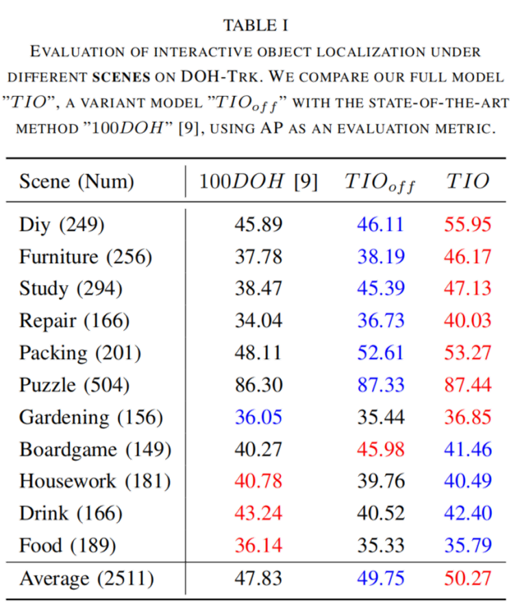

Understanding human interaction with objects is an important research topic for embodied Artificial Intelligence and identifying the objects that humans are interacting with is a primary problem for interaction understanding. Existing methods rely on frame-based detectors to locate interacting objects. However, this approach is subjected to heavy occlusions, background clutter, and distracting objects.
To address the limitations, in this paper, we propose to leverage spatio-temporal information of hand-object interaction to track interactive objects under these challenging cases. Without prior knowledge of the general objects to be tracked like object tracking problems, we first utilize the spatial relation between hands and objects to adaptively discover the interacting objects from the scene. Second, the consistency and continuity of the appearance of objects between successive frames are exploited to track the objects. With this tracking formulation, our method also benefits from training on large-scale general object tracking datasets. We further curate a video-level hand-object interaction dataset for testing and evaluation from 100DOH.
The quantitative results demonstrate that our proposed method outperforms the state-of-the-art methods. Specifically, in scenes with continuous interaction with different objects, we achieve an impressive improvement of about 10% as evaluated using the Average Precision (AP) metric. Our qualitative findings also illustrate that our method can produce more continuous trajectories for interacting objects.
@article{tio2023,
author = {Shao, Yanyan and Ye, Qi and Luo, Wenhan and Zhang, Kaihao and Chen, Jiming},
title = {InterTracker: Discovering and Tracking General Objects Interacting with Hands in the Wilds},
journal = {IROS},
year = {2023},
}